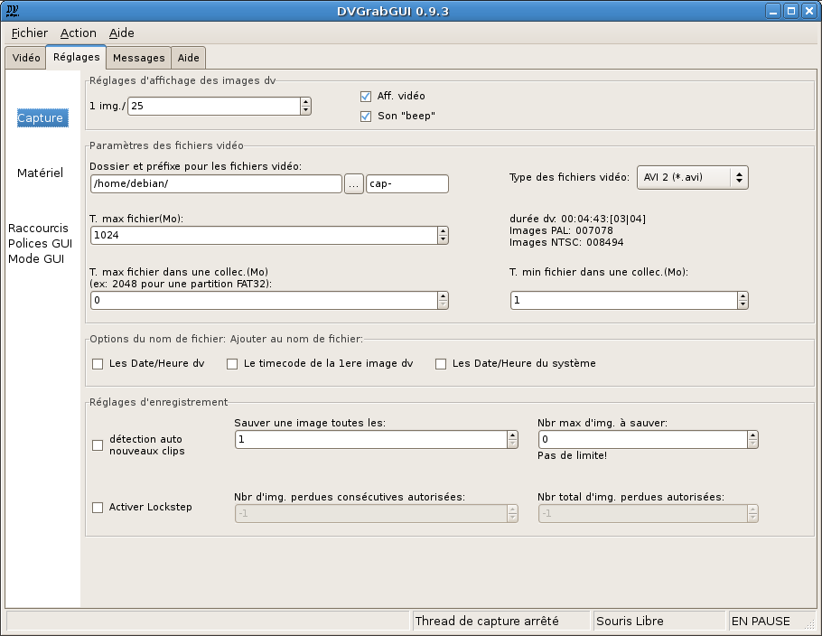

Pré: Référence → Fenêtre Vidéo (mode "Petit") --- ↑Home --- Suiv: Référence → Réglages → Matériel
DVGrabGUI 0.9.4
Référence → Réglages → Capture
Cet onglet vous permet de régler les options de la capture. Probablement les
plus utiles!

-
Réglages d'affichage des images dv:
Ce cadre regroupe les réglages de l'affichage dv dans la fenêtre vidéo.
-
1 img./
Afficher une image dv toutes les n images reçues.
-
Aff. vidéo
Pour activer ou non l'affichage des images dv. Désactivez cette
option si vous voulez économiser vos batteries, ou rencontrez des
problèmes de "sigsev" (vous devriez d'ailleurs rencontrer les
mêmes si vous essayez l'enregistrement en images "jpeg": il y a
des problèmes avec votre version de "libdv").
-
Son "beep"
Pour activer ou non le son "beep" pendant les enregistrements.
-
Paramètres des fichiers vidéo:
Ce cadre regroupe les principaux réglages des fichiers vidéos.
-
Dossier et préfixe pour les fichiers vidéos
Pour régler, d'abord le chemin où stocker les fichiers vidéo,
puis la première partie du nom des fichiers vidéos (complété par
une valeur date/heure optionnelle, un numéro et l'extension de
fichier, fonction du choix dans la liste à droite).
Le bouton "…" ouvre une boîte de dialogue pour choisir le dossier
qui contiendra les fichiers vidéo.
-
Type des fichiers vidéo
Cette liste déroulante vous permet de sélectionner le format des
fichiers vidéo:
-
AVI 1 – Conteneur AVI, pas d'"openDML" (gros
fichiers), pas de double-enregistrement des données audio;
-
AVI 2 – Choix par défaut. Conteneur AVI, avec
"openDML" (gros fichiers), mais double-enregistrement des
données audio (légère perte de place…);
-
Raw (*.dv, *.dif) – Enregistrement du flux dv
"tel quel", sans encapsulation dans un conteneur;
-
Jpeg – Enregistrement du flux dv dans une série
d'images fixes jpeg. Notez que cette option peut être
absente, si libjpeg n'a pas été trouvée au moment de la
compilation. Notez également que vous ne devriez pas
essayer d'enregistrer toutes les frames dv: vous devriez
plutôt enregistrer au plus une image sur deux ou sur trois…
-
T. max fichiers
La taille maximum d'un fichier vidéo, en Mo. Si réglé à "0", il
n'y a pas de limite!
-
Texte statique
Ce texte d'info vous affiche le temps enregistré, et le nombre
maximum d'images en PAL et NTSC, permis par le réglage "T. max
fichiers" précédent (cela dépend aussi du format
choisi – pour les images Jpeg, il s'agit du cas le
plus mauvais – bruit aléatoire! – pour la
définition normale: en général, vous pourrez enregistrer
au moins autant d'images Jpeg que de frames dv dans les autres
formats…).
-
T. max fichier dans une collec.
Si >0, crée des "collections" de fichiers de cette taille (en Mo).
Utile si vous voulez graver ces fichiers sur des CDs (!), DVDs,
ou si vous utilisez une partition FAT, …
-
T. min fichier dans une collec.
Pour être sure que vous n'aurez pas de fichiers plus petits que
cette valeur (en Mo) dans votre collection!
-
Options du nom de fichier:
Vous pouvez ajouter les données temporelles suivantes à vos noms de
fichier:
-
Les Date/Heure dv
Ajoute les Date/Heure enregistrées sur la cassette dv.
-
Le timecode de la 1ere image dv
Ajoute le timecode de la première image enregistrée.
-
Les Date/Heure du système
Ajoute les date/heure de l'OS au moment du début de la capture.
-
Réglages d'enregistrement:
Options supplémentaires pour contrôler l'enregistrement.
-
détection auto nouveaux clips
Essaye de créer un nouveau fichier pour chaque clip (détecté par
les méta-données du flux dv, ou les discontinuités du timecode).
-
Sauver une image toutes les
Enregistrer une image toutes les n images reçues.
-
Nbr max d'img. à sauver
Le nombre maximum d'images à enregistrer avant d'arrêter
l'enregistrement. Le texte en-dessous vous indique le temps
correspondant en PAL (25fps) et NTSC (30fps). Si réglé à "0", il
n'y a pas de limite!
Notez que le plus court entre ce réglage et
"T. max fichier" "gagne"!
-
Activer Lockstep
Activez cette option pour arrêter l'enregistrement si trop
d'images sont perdues pendant celui-ci (voyez les deux réglages
ci-dessous). Notez que DVGrabGUI répète la dernière image
complète reçue pour remplacer celles qui sont perdues…
-
Nbr d'img. perdues consécutives autorisées
C'est le nombre de pertes d'image (non reçue, ou incomplète)
consécutives autorisées pendant un enregistrement, que DVGrabGUI
remplacera avec la dernière bonne image reçue, avant l'arrêt de
la capture. Si réglé à "-1", il n'y a pas de limite!
-
Nbr total d'img. perdues autorisées
C'est le nombre maximum de pertes permises pendant un
enregistrement, avant que DVGrabGUI n'arrête la capture. Comme
ci-dessus, si réglé à "-1", il n'y a pas de limite!
Pré: Référence → Fenêtre Vidéo (mode "Petit") --- ↑Home --- Suiv: Référence → Réglages → Matériel
(c) 2006, 2007, 2008 Bastien Montagne (montagne29 chez wanadoo point fr).
Projet hébergé sur sourceforge.net/projects/dvgrabgui.